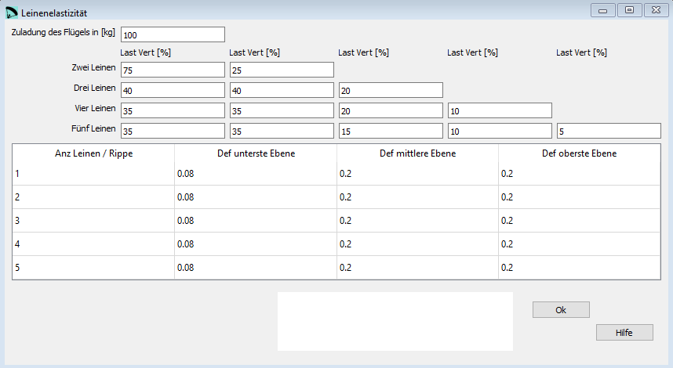

Korrektur Leinenelastizität¶
Hier kannst Du die Korrekturparameter für die Leinenelastizität eingeben. Die Leinenverlängerung unter Last wird von der geometrischen Länge abgezogen so dass die Geometrie möglichst den geplanten Werten entspricht.
Zum Berechnen verwenden wir die Last der einzelnen Leinen und den Dehnungskoeffizient. Die Berechnung bastiert auf Hook’s Gesetz: F = k·dx
{kind=link}
Rohdaten:
*****************************************************
* 18. Elastic lines corrections
*****************************************************
100
75 25
40 40 20
35 35 20 10
35 35 15 10 5
1 0.08 0.2 0.2
2 0.08 0.2 0.2
3 0.08 0.2 0.2
4 0.08 0.2 0.2
5 0.08 0.2 0.2
Zuladung des Flügels¶
Die Zuladung des Flügels in [kg]. Das Flügelgewicht selber nicht einrechnen.
Lastverteilung¶
Hier wird abhängig von der Anzahl Aufhängepunkte die Lastverteilung der einzelnen Aufhängepunkte eingegeben.
Leinendeformation¶
Abhängig von der Anzahl Aufhängepunkte und der Leinenebenen werden hier die Deformationkoeffizienten der Leinen festgelegt.
Eine detaillierte Beschreibung in englisch findest Du auf der Laboratori d'envol website.